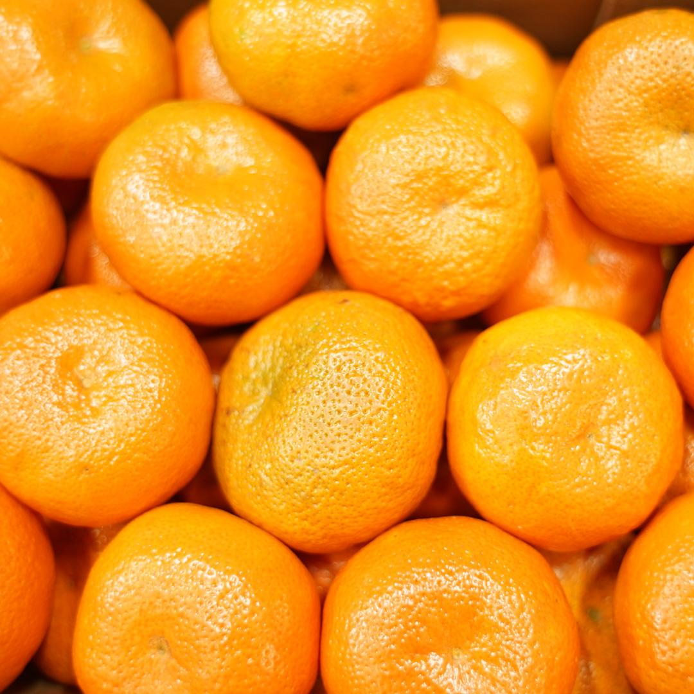
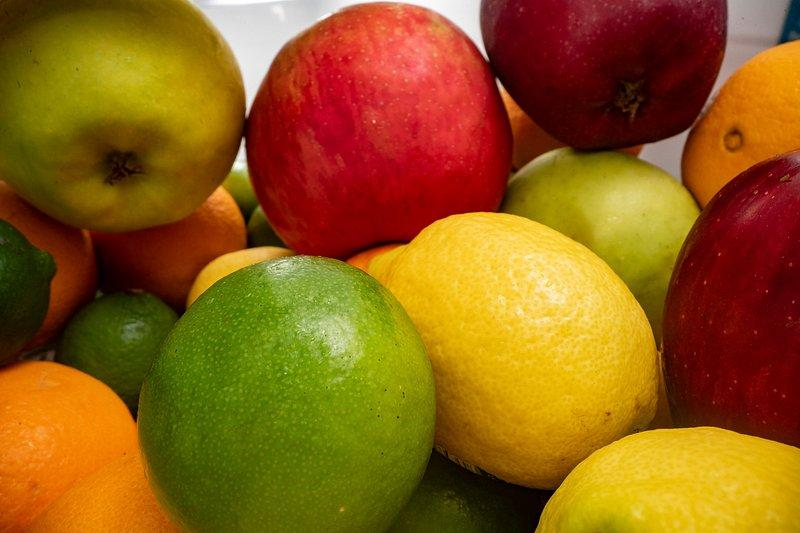
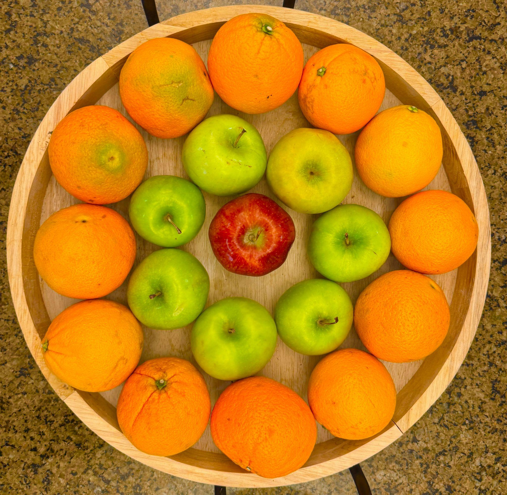

EXPERIMENT 03 · IMAGE SEGMENTATION
Marker-Controlled Watershed
Segment and count individual fruits in images containing clusters of touching fruits using watershed segmentation.
01. Select Fruit Image
Upload an image or choose one of the sample images below.
Sample Fruit Images

Fruit Cluster 01

Fruit Cluster 02

Fruit Cluster 03
Selected fruit image will appear here.
02. Segmentation Parameters
Adjust the parameters to control fruit separation.
03. Segmentation Results
Original Image
Waiting for image...
Preprocessed Image
Waiting for processing...
Distance Transform
Waiting for processing...
Marker Image
Waiting for processing...
Final Watershed Output
Waiting for processing...
04. Segmentation Analysis
Fruit Count
-
Foreground Pixels
-
Segmented Regions
-
Algorithm Analysis
Upload an image and run watershed segmentation to view the analysis.